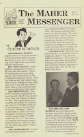
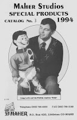
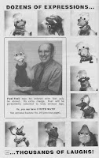
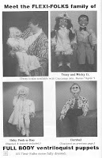

No 12 N/V Give-away
8/28/2011
{kind=link}

Craig Lovik always seemed to have limitless creativity. One of my jobs when partnered with Craig was keeping him focused and in check with his ventriloquist products. But in 1994, for whatever reason, we both turned things up a notch. Some of the new products from Lovik World in 1994: The Wubbles ("cartoon on a stick"), Flexi-Fowl ("dozens of expressions; thousands of laughs"), Flexi-Folk Puppets (full body & half body puppets with latex faces), plus a dozen new books from Good Clean Fun Publishing Company which was also a C. J. Lovik production.
Our son, Kevin, also brought his Talking Ties back in 1994 along with a life size Skeleton ventriloquist figure. And there was more - so much so that we issued three Special Products Catalogs in 1994 along with our regular Maher Catalog.
I have a package of 1994 Maher Publications and catalogs to give away today - actually I have two. They go to Mike Brown and Frank Ward. And, please guys, don't try to order from these catalogs! I'm only partially joking. It was always amazing to us to frequently receive an order for products no longer available because customers, well meaning I'm sure, used an out of date catalog. The order would come with a note saying something like this, "I didn't find such-and-such in your new catalog, so had to use an old catalog to make this order." I believe the record was an order from a catalog ten years out of date, although just a few weeks ago we received a check for an NAAV membership renewal! (NAAV was dropped in 2004 - We returned the chec
{kind=link}

k.:-){kind=link}

